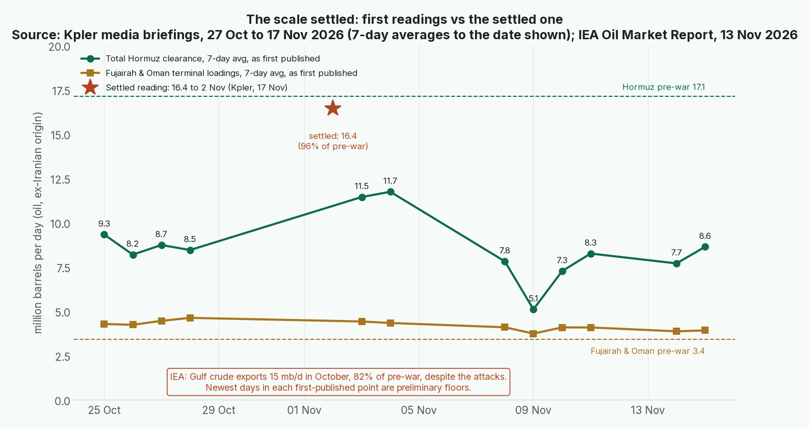

Issue #6 · Wednesday 18 Nov 2026 · Warren for Tyler · Back to the master Board Position · Previous issue: 2026-11-11
Tyler, last week I said I wouldn't change a price tag until the scale settled. It settled. Two scores move this week, both down.
My grandfather kept a grain scale in the barn, and he wouldn't write a number down until the needle stopped swinging. The neighbours hated the wait. He'd tell them a fast number is just a guess holding a pencil.
Kpler's Hormuz gauge has been swinging for a month. The first reading for the week to 3 November was about 11.5 mb/d. The newest reading a week later said 7.8, and the one after that said 5.1 (Kpler 5 Nov; Kpler 10 Nov; Kpler 11 Nov). Every briefing warns that the newest days are floors that usually settle 1.5 to 2 times higher.
Now the needle has stopped on one week. Kpler's series now shows a November peak of 16.4 mb/d for the seven days to 2 November, about 96% of the pre-war 17.1 (Kpler 17 Nov). That isn't a guess. Those are ships that crossed, each confirmed more than one way.
The official ledger agrees. The IEA says Gulf crude exports reached 15 mb/d in October, 82% of pre-war, despite continued attacks on tankers, and oil on water jumped 86 million barrels. It now sees the world back in surplus in the fourth quarter, about 1.7 mb/d more supply than demand (IEA OMR Nov; Reuters). Saudi Arabia pumped 9.99 mb/d in October and Iraq 4.6. Dated Brent fell from $136 on 8 October to about $93 when the IEA wrote (IEA OMR Nov), and Reuters had Brent down 20% for the month by 17 November (Reuters 17 Nov).

Chart: Kpler media briefings of 27 October to 17 November 2026, seven-day averages to the date shown, each as first published, against March 2025 to February 2026 baselines. The star is the settled reading for the week to 2 November in Kpler's 17 November briefing. IEA figure from its 13 November Oil Market Report.
How it scores. Iran's chokepoint goes from 6 to 5, and its overall from 3.11 to 2.93. My fixed anchor for a 5 reads "a few niche chokepoints others can work around at a cost." That's the strait today: dark crossings, ship-to-ship transfers off Oman, and Fujairah and Oman loadings about 15% above pre-war (Kpler 17 Nov). The cost is real. Freight from the Gulf to Asia sits near records, and product and LPG exports are still about half of pre-war (IEA OMR Nov). But the ships are paying and getting through. I said I'd cut it the week the ships moved. They moved.
Bear case. The tollkeeper hasn't left the booth. The IMO counts at least eight incidents on shipping in November, and reports say explosions halted two laden supertankers on 11 November (Kpler 13 Nov; Kpler 17 Nov). On 17 November Iranian drones attacked a US radar in Bahrain, and a ship in the strait was hit twice with its crew unaccounted for (Reuters 17 Nov). The newest preliminary reading is back to 8.6 mb/d. And reports that Tehran exempts ships from Iraq, Qatar, China and India say it still picks who passes. A few bad weeks and this 5 is a 6 again. Confidence: Medium.
In the long run, a toll road with a working detour beside it is worth less than it used to be, however loud the man in the booth.
1. Dedollarization. Quiet. No new IMF reserve data until late December, so the dollar's 56.70% stands. Confidence: High.
2. Gold and central banks. No new monthly figures this week. The People's Bank's 24-month buying streak (Reuters) and the 321 tonnes central banks bought in the third quarter (WGC Q3) stand. China's hard assets hold at 6, Russia's at 7. Confidence: High.
3. Blocs. Trump, Xi and Putin are due to meet together in Shenzhen on 19 November, alongside a Trump-Xi bilateral at APEC; Beijing, Washington and Moscow have all confirmed it (Anadolu). A meeting is announced, not operating, and the trade truce still runs to 10 January. US alliances hold at 7. Confidence: Medium.
4. China, Russia, India and the Gulf. The diesel deal never landed. The Agioi Fanendes turned back about 400 nautical miles off New York and has drifted for orders since 9 November; no Russian diesel has reached the US, and Washington's energy secretary says it will go to another port (Bloomberg; Reuters). The Talisman made for Alexandria and the Leruo for Brazil (AFP). Gulf crude arrivals in India also overtook Russian ones for the first time since the war began (Kpler 11 Nov). That was my trigger: Russia's alliances go 4 to 3, overall 4.37 to 4.19. Bear case: Treasury's licence to 7 April stands, and Putin gets a seat at Thursday's table. Confidence: Medium.
5. Military. The Houthis claimed a drone strike on East-West Pumping Station No. 7 and a missile at Yanbu on 12 November; Riyadh didn't confirm, and the coalition reported intercepting drones (AFP via The New Arab). Saudi crude still reaches Europe through Yanbu and the Sumed pipeline at about 1.3 mb/d (Kpler 17 Nov). Gulf hard assets hold at 7; the Houthis stay ▲ Rising. Confidence: Medium.
6. Tech and resources. Jensen Huang resigned as Nvidia's chief after scrutiny of his ties to a former head of Megaspeed, a Singapore firm suspected of diverting chips to China (AP; DOJ/Commerce). Commerce answered on 16 November: overseas data centres must vet customers from China and other countries of concern, and advanced chips to Indonesia, Malaysia, Singapore, Thailand and Brazil need a licence (CNBC). The rule takes effect when it is published in the Federal Register, set for 19 November; data centres already serving firms headquartered in China, Macau or other D:5 countries then have 90 days to get a licence (BIS rule text; K&L Gates). A fence on paper isn't a fence in the ground yet. The US chokepoint holds at 9. Confidence: Medium.
Two cuts, both earned by ships and cargoes, not speeches. That's the only kind I care to make.
Warren
Sources and the full scores tables are on the master board. Gaps: Kpler's latest days are preliminary and the settled 2 November peak can still revise; Reuters read via syndication, Bloomberg via gCaptain, AFP via Le Marin and The New Arab; the Iranian exemption reports and the Houthi claims are unconfirmed; Intangibles not rescored until the quarter turns.